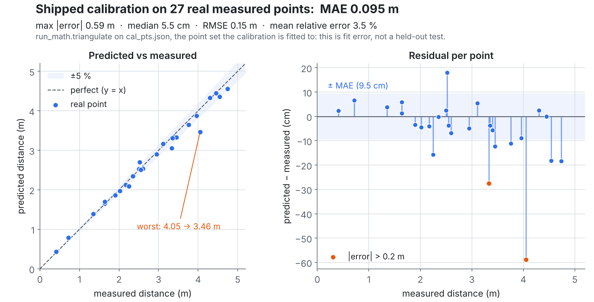

Stereo vision: metric distance from two cameras, from scratch
Measures real-world distance in metres from a calibrated camera pair with no deep learning and no OpenCV calibration. The lens model, the gradients and the triangulation are derived by hand and written in NumPy.
27real measured points
0.095 mfit error (MAE)
0.32 mleave-one-out error
11tests in CI
- A learnable 5×5 Γ grid per camera encodes focal length and lens distortion; a frozen centre node removes the scale degeneracy.
- Analytic gradients through bilinear interpolation, verified against finite differences in the test suite.
- CLAHE + ZNCC epipolar search, sub-pixel SSD and Lucas–Kanade refinement, then least-squares triangulation.
NumPy · Pygame · OpenCV (matching only) · math derivation (PDF)